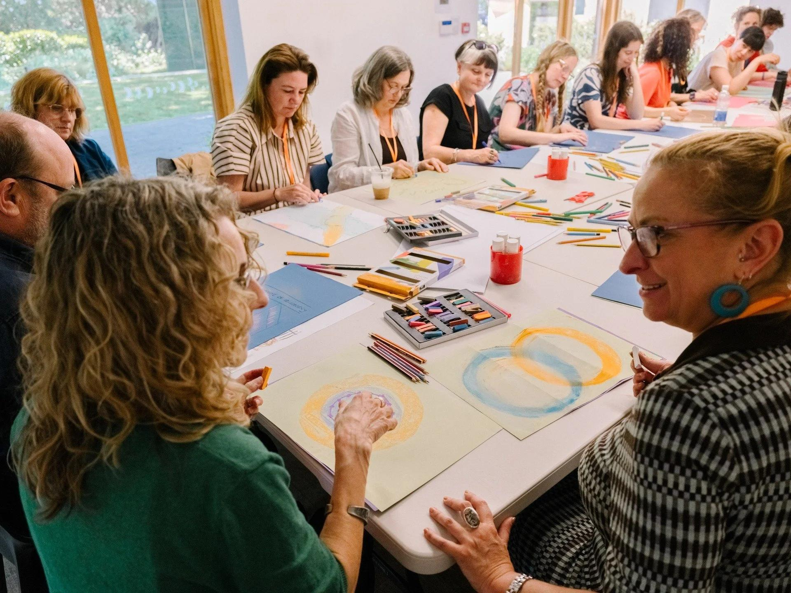
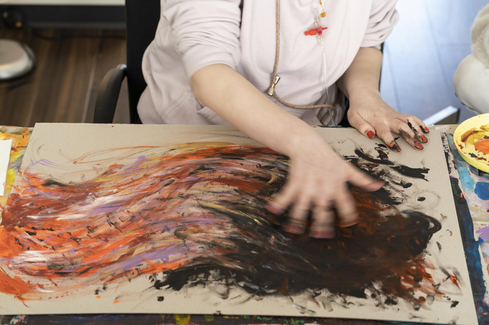
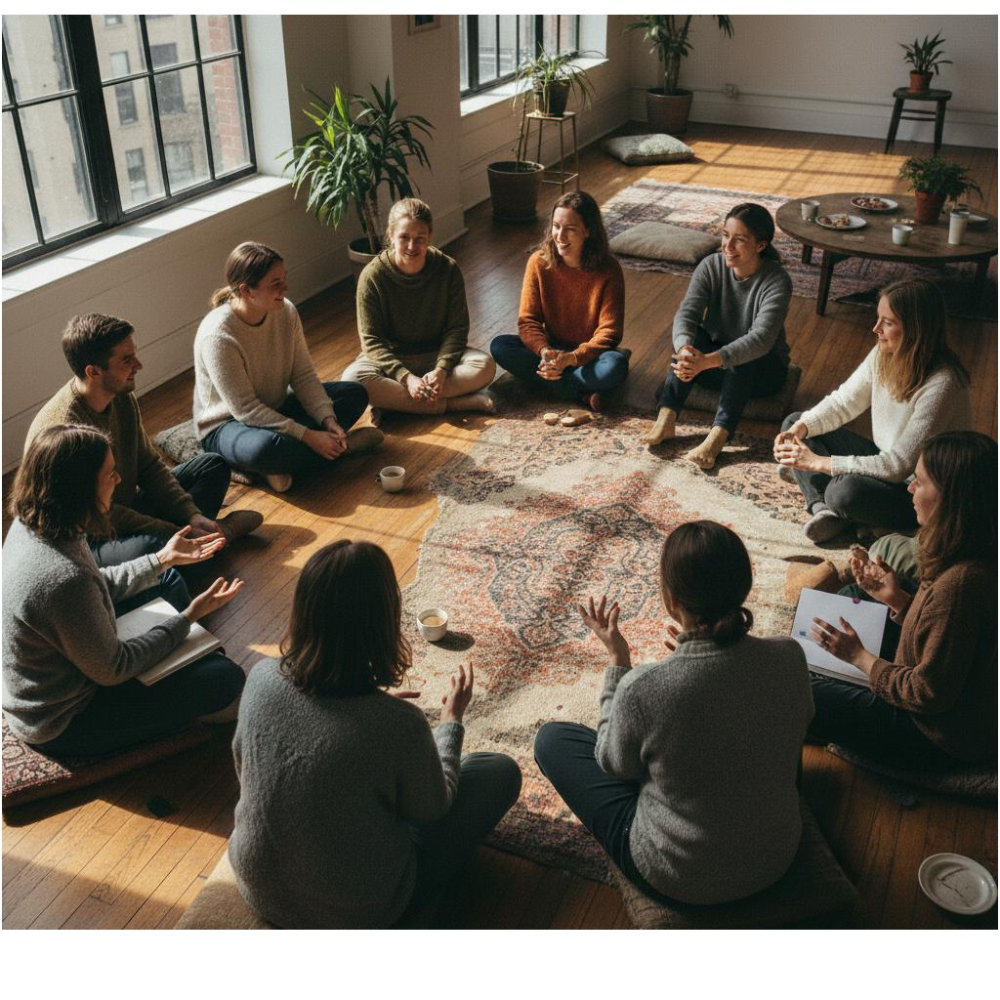
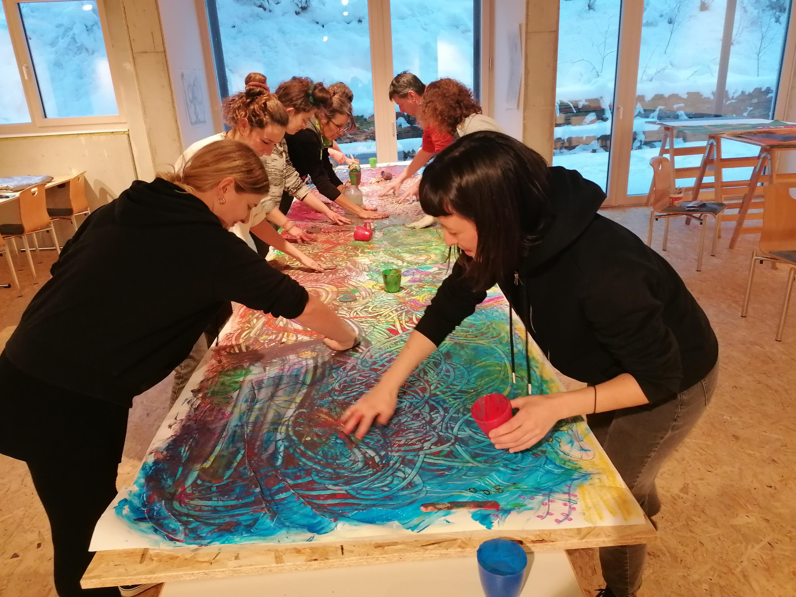
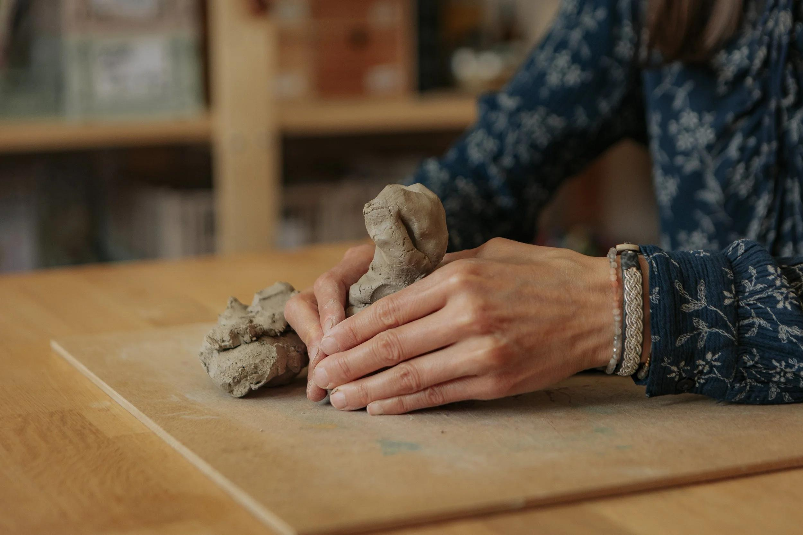

СВЕТ МАЯКА
Для взрослых, переживающих потерю близкого человека.
Когда уходит близкий человек, меняется не только наша жизнь. Иногда меняется само ощущение времени, дома, будущего и себя.
Окружающие могут ждать, что однажды мы снова станем прежними. Но прежними быть необязательно.
«Свет маяка» — пространство, где можно говорить о потере, молчать, вспоминать, злиться, грустить, создавать что-то своими руками и встречаться с людьми, которым не нужно объяснять, почему спустя время всё ещё бывает трудно.
Здесь не нужно искать правильный способ горевать. Можно искать свой.
Как присоединитьсяВедущая: Анна Анопова

Для тех, кто проживает потерю
Группа открыта для женщин и мужчин, переживших смерть близкого человека. Неважно, сколько времени прошло. Необязательно рассказывать свою историю или участвовать в каждой практике: можно выбирать комфортный для себя способ присутствовать.
Восемь встреч · онлайн и очно
Каждая встреча объединяет бережный разговор и творческую практику. Не нужно уметь рисовать. Мы не оцениваем работы и не ищем «правильных» чувств.
01Моя история
Знакомимся и создаём пространство, где можно быть собой. Можно рассказать о своей потере столько, сколько хочется, или просто слушать. Творческая практика «Мой сегодняшний мир».

02То, что невозможно выразить словами
Через цвет, линии и материалы исследуем чувства, для которых бывает трудно найти слова. Необязательно объяснять свою работу другим.

03Жизнь до и после
Замечаем, как изменились повседневность, отношения, время и представления о будущем. Создаём творческую карту изменений.

04То, что остаётся со мной
Вспоминаем слова, истории, привычки и моменты близости. Создаём личную коллекцию памяти — только из того, чем хочется поделиться.

05Когда другие не понимают
Говорим об одиночестве, чужих ожиданиях и праве на собственный темп. Практика «Моя территория» — о границах и бережном отношении к себе.

06Где искать опору
Исследуем людей, места, действия и небольшие моменты, которые помогают проживать сегодняшний день. Создаём коллаж опор.

07Разрешить себе жить
О том, как рядом с горем могут существовать новые желания, радость, вина и другие противоречивые чувства. Практика «Место для жизни».

08Мой свет маяка
Собираем то, что хочется сохранить, и то, что помогает ориентироваться в изменившемся мире. Завершающая творческая работа — «Мой свет маяка».

Творчество рядом с другими
В группе можно рисовать, собирать коллажи, работать с бумагой, цветом и другими материалами. Не нужно создавать красивую работу или объяснять её смысл.



Как устроена группа
Встречаемся онлайн или очно в отдельных небольших закрытых группах. Состав участников остаётся постоянным на протяжении программы.
- Формат: онлайн (видеовстречи) или очно
- Программа: 8 встреч по 2 часа
- Продолжение: после восьми встреч возможно продолжение группы по запросу участников
- Участники: взрослые, небольшая группа 6–8 человек
- Подход: разговор, поддержка и творческие практики
- Стоимость и даты: уточняются перед началом набора
Мы договариваемся о конфиденциальности, уважении границ и праве не делиться личным. Группа поддержки не заменяет индивидуальную психологическую или медицинскую помощь.
Оставить предварительную заявкуЗаявка не обязывает участвовать.